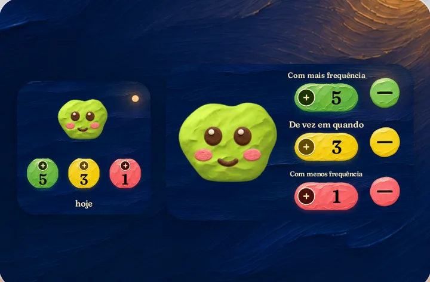
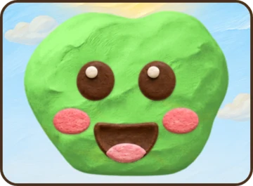
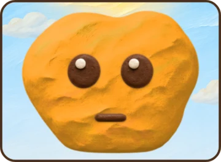

Um diário alimentar. Sem contar calorias.
Verde, amarelo ou vermelho. Você decide o que cada cor significa.


Um toque na sua tela inicial.
Anote sem abrir o app. De dia ou de noite.



O rosto acompanha o seu dia.
Radiante, tranquilo ou simplesmente neutro. Nunca fecha a cara.
Toda manhã começa pequena.
Sem sequências para perder. Um dia sem registro não quebra nada.
Por que tão simples?
97%
dos dias
com uma lista curta
49%
dos dias
anotando cada alimento
Estudo-piloto pequeno. Testou o método, não o Green Blob.
Sem conta. Sem anúncios. Sem nuvem.
Seu diário fica no seu dispositivo.

Um diário alimentar é para você?
Manter um diário alimentar não serve para todo mundo. Se registrar deixa a hora de comer mais estressante, tudo bem parar. Conversar com alguém de confiança, ou com um profissional, pode ajudar.